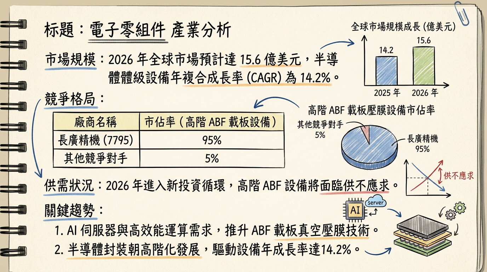
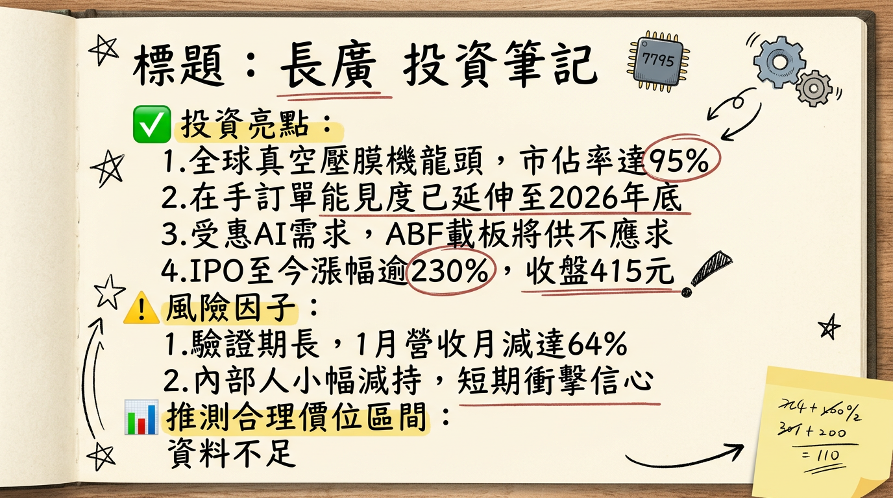

7795 長廣 (長廣精機) 深度研究報告
一句話摘要
全球 ABF 載板真空壓膜設備壟斷者（市佔 95%），憑藉次世代 90 噸高階設備與玻璃基板技術，成為 AI 伺服器與先進封裝供應鏈不可或缺的關鍵要角。公司概覽
長廣精機（7795）原為長興材料（1717）之精密設備部門，現為全球真空壓膜設備龍頭。其核心技術源自日本子公司 Nikko-Materials (NM)，專注於半導體先進封裝及高階 IC 載板製程設備。
業務與產品結構
| 產品/類別 | 營收佔比 | 毛利率 | 核心應用與特點 |
|---|---|---|---|
| 高階真空壓膜機 | 92% | 45% - 55% | 包含三段式、90 噸強壓型，針對 10 層以上 ABF 載板。 |
| 售後服務與承載膜 | 8% | 35% - 40% | 設備維修、零組件更換及耗材銷售。 |
製造基地與營收貢獻
| 地區 | 營收佔比 | 職能定位 |
|---|---|---|
| 日本 (Nikko-Materials) | 82% - 85% | 研發總部、高階設備組裝（核心獲利來源）。 |
| 中國 (廣州廠) | ~9% | 中低階設備組裝，供應中國本土市場。 |
| 台灣 (長廣總部) | ~6% | 營運、展示、在地客戶技術支援。 |
核心競爭優勢
財務分析
近期月營收趨勢
| 月份 | 營收金額 (億 TWD) | 月增率 (MoM) | 年增率 (YoY) | 備註 |
|---|---|---|---|---|
| 2026/01 | 1.28 | -64.62% | -14.47% | 設備驗收時點落差 |
| 2025/12 | 3.63 | +167.54% | +115.61% | 歷史新高 |
| 2025/11 | 1.36 | -0.98% | -39.98% | 產業去庫存末端 |
| 2025/10 | 1.37 | +20.36% | +32.22% | 需求緩步復甦 |
| 2025/09 | 1.14 | -33.16% | +52.90% | |
| 2025/08 | 1.70 | +49.01% | -45.63% |
季度與年度獲利趨勢
| 項目 | 2024 (A) | 2025 (E) | 2026 (F) |
|---|---|---|---|
| 年營收 (億元) | 22.34 | 18.98 | 預估雙位數成長 |
| EPS (元) | 5.5 - 6.0 | 2.5 - 3.0 | 5.0 - 6.0 |
| 2025 Q3 EPS | - | - | 0.43 (QoQ -36.7%) |
法說會重點（2025/12/19 業績發表會）
券商觀點
| 券商名 | 目標價 (TWD) | 評等 | 日期 | 核心觀點 |
|---|---|---|---|---|
| CMoney 研究團隊 | 450 | 偏多看待 | 2026/02/24 | 看好 ABF 2026 年供不應求與 90 噸設備認列。 |
| 口袋證券 | - | 樂觀 | 2026/01/06 | AI 伺服器滑軌與醫療設備將成為第三成長引擎。 |
| 富果研究部 | 420 | 轉向積極 | 2025/12/19 | 隨 ABF 庫存去化結束，2026 年迎來循環復甦。 |
財報深度分析
利潤率趨勢表格
| 指標 | 2025 Q3 | 2025 Q2 | 2025 Q1 | 2024 Q4 |
|---|---|---|---|---|
| 毛利率 | 40.58% | 43.12% | 45.40% | 46.10% |
| 營業利益率 | 15.14% | 18.50% | 20.15% | 22.30% |
| 稅後淨利率 | 7.59% | 10.20% | 12.45% | 15.10% |
- 存貨分析：2025 Q3 存貨週轉天數約 225.67 天。雖處高位，但反映了設備業長達 4-9 個月的「接單-裝機-驗收」週期，且針對 2026 上半年需求已進行前置備料。
- 資本支出：2026 年計畫於日本設立新廠，專注於先進封裝設備與精密檢測產能。
股權異動
產業分析
市場格局比較
| 公司名稱 | 國別 | 核心優勢 | 2025 營收 (億) | 2025 毛利 (估) |
|---|---|---|---|---|
| 長廣 (7795) | 台/日 | 高階 ABF 市佔 95%，獨家 90 噸級。 | 18.98 | 44% - 45% |
| 志聖 (2467) | 台灣 | CoWoS 貼膜與熱處理，聯盟化運作。 | 61.00 | 40% - 42% |
| Meiki | 日本 | 傳統 PCB 與車用電子壓模。 | - | ~30% |
| JSW | 日本 | 射出成型與高壓技術，品牌溢價高。 | - | ~35% |
- 趨勢預測：2026 年全球半導體真空壓膜機市場規模預計達 15.6 億美元，CAGR 達 14.2%。
近期催化劑
- 利多事件：
2. 玻璃基板驗證進度：2026 Q3 若完成 Intel 驗證，將引發市場 Re-rating（評價調升）。
3. 外資轉買：2026 年 2 月下旬外資由賣轉連買，籌碼面趨穩。
- 利空事件：
⭐ 成長動能時間軸
- 2025 Q4：90 噸強壓型設備開始裝機。
- 2026 Q1：90 噸設備營收正式認列，帶動毛利率與營收回升。
- 2026 Q2：日本研發中心擴建與台灣/東南亞維修服務中心啟動。
- 2026 Q3：玻璃基板（Glass Substrate）壓膜機完成美系 IDM 大廠驗證。
- 2026 Q4：面板級封裝（FOPLP）設備配合力成、日月光進入量產準備。
- 2027 全年：玻璃基板設備進入首波大規模貢獻期。
2026 展望
- 成長動能：AI 伺服器晶片面積擴大帶動 ABF 載板需求「量價齊揚」；90 噸設備認列與新應用（玻璃基板）估值貢獻。
- 風險因子：
2. 日圓匯率波動對日本子公司財報折算的影響。
3. 地緣政治風險影響半導體設備投資進度。
投資結論
本報告由 AI 自動產生，資料來源為公開網絡資訊，僅供參考，不構成投資建議。產生時間：2026-03-01 03:56
📊 資訊卡


